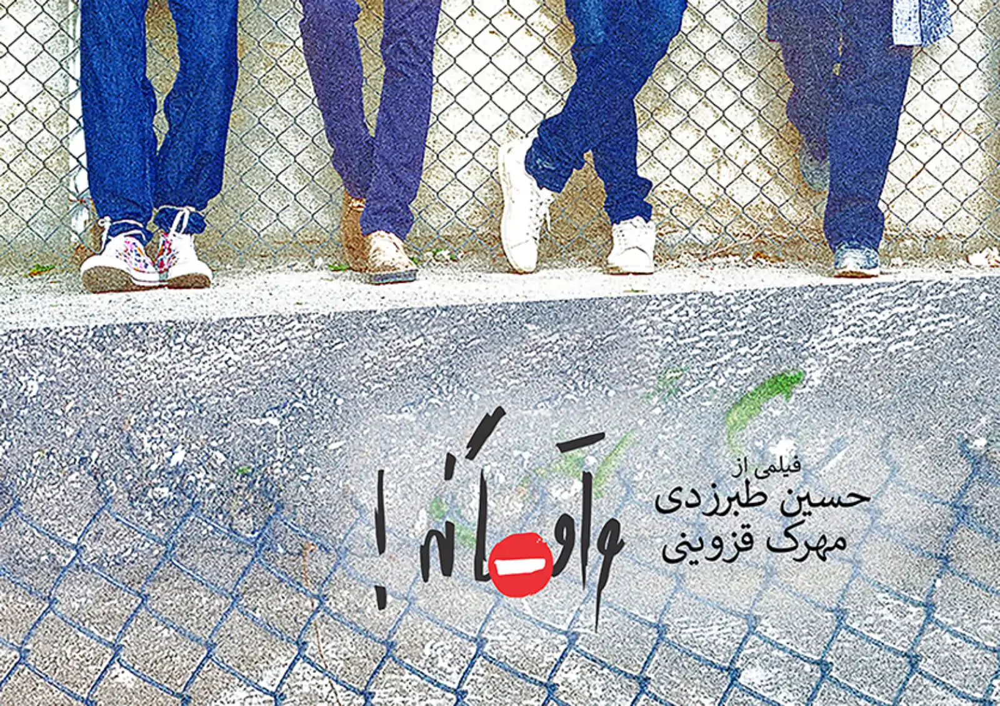

فیلم کوتاه "واقعا نه!" چطور ساخته شد؟
ایده ی “واقعا نه!” زمانی به ذهن حسین طبرزدی رسید که در حین پریدن از جوی آب، جلوی ماشینی ایستاد که همون موقع درش باز شد! صاحب ماشین مردی بود که با دوستش به سمت ماشین می اومدند و با وجود اینکه هنوز بیست متری از ماشینش فاصله داشت، در رو با دزدگیر باز کرد و انگار که در برای حسین، باز شده بود! حسین تو راه دفتر این ایده رو طوری پروروندش که وقتی برای من(مهرک قزوینی) تعریفش کرد، چند دقیقه با دهن باز نگاهش کردم. فلسفه ذهنی حسین، قصهای برای بیان شدن پیدا کرده بود و ذهنش مدام راه حل های بامزه ای برای اجراش پیدا میکرد. مثلا یه سری بازی با عدد و ریاضی که من با اینکه ازشون سر در نمی آوردم، با کیف می نوشتم و آخر سر حسین، دیالوگ هاشو براساس توالی اون عددها نوشت. شاید نتیجهاش برای کسی که میشنودشون چیز عجیبی نباشه اما با لذت تمام این فیلمنامه رو نوشتیم و رسیدیم به 6 تا شخصیت اصلی.
تصمیم گرفتیم از انتخاب بازیگر، ساده نگذریم و هشت مرحله تست طراحی کردیم و با تمام آموزشگاه های معتبر بازیگریِ تهرون تماس گرفتیم و از بیش از 80 نفر تست گرفتیم.

بازیگران "واقعا نه!" چطور انتخاب شدند؟
محمد شیرازی تا پیش از رفتن سر پروژه ی زخم کاری، تو مراحل تست و هماهنگی کنارمون بود و دیگه داشتیم حسابی خسته میشدیم که ناگهان از موسسه “اینجا میان شهر” باهامون تماس گرفتند و وقت ملاقاتی با صابر ابر برامون گذاشتن. صابر، فیلمنامه رو خونده بود و رویکرد کاملا متفاوتی نسبت به تمام کلاس های دیگه در پیش گرفته بود. اون راجع به نقش ها باهامون حرف زد و تعدادی از بچه هاش رو بهمون پیشنهاد داد. هیجان زدگی ما از جدی گرفته شدن کار کوتاهمون، به همین جا ختم نشد. بچه های “اینجا” اومدن و یکی از اون یکی بهتر بودن. جلسات تست بهمون حسابی خوش میگذشت و مراحل رو قدم به قدم پیش میرفتیم. ایمان عمادی که از روز اول رفیقمون شده بود موند. نورآرش چارلی که نمی دونستیم چرا تا حالا نبوده. تینا پیرویسیان که با موتور تو بارون اومده بود که بمونه. بیتا صادقی هم که از فیلم “بی غلط” باهامون بود یه تست داد که اشک منو درآورد و اونهم به تیم “واقعا نه!” پیوست. به لوریمر کوک تپه که گریمور “بیغلط” بود و دوستش داشتیم، پیشنهاد نقش دادیم و قبول کرد و اومد. کار کردن با محمدرضا رشیدی که سر تست اولش میخکوبمون کرده بود، بدجوری مونده بود سردلمون. بهش نقش کوچکتری پیشنهاد دادیم و دمش گرم، اومد. مارال عبدالهی رو هم دلمون میخواست اما نقشی نمونده بود. خواهش کردیم دستیار باشه و قبول کرد و خلاصه تا به خودمون اومدیم دیدیم چند تا رفیق تازه و کار درست داریم.
محمد شیرازی قبل از رفتنش، پارکینگ اریکه رو ردیف کرده بود و ما با خیال راحت سه ماه کله سحر، اونجا تمرین میکردیم. تو گرما و سخت. اما خب حسین هر روز با یه بازی جدید، همه مون رو سرذوق می آورد و بچه ها با همه وجود دل به کار دادند. هنوزم امکان نداره که فیلم ها یا عکسای اون روزا، خنده رو لبم نیاره.
با شش تا فیلمبردار تا پای کار رفتیم و نشد. تیممون عالی بود و پرتوقع شده بودیم. شهاب ملک پور و سهند خلج، همکلاسی های باحال کلاس هومن بهمنش همراهمون شدن. بعد از یه صدابرداری که آدم نمیدونه چی میشه بهش گفت! بهمن دادفر که دوست حسین بود، علی ذوالفقاری رو برای صدا بهمون معرفی کرد و از همون اول، باحالیش به دلمون نشست. علی هم پدرام رمضانی همراه رو آورد و خلاصه… با سرهنگ سعید رستم خانی که از ناجی هنر اومد تا ناظر و مشاور انتظامیمون باشه، شدیم 12 نفر و “واقعا نه!” رو تو یه صبح تا ظهر فیلمبرداری کردیم… و مث هر کاری سخت گذشت و کلافه هم شدیم و نامردی هم دیدیم اما… کِیف کردیم… کِیف کردیم… کِیف کردیم

پیش تولید واقعا نه را چطور شروع کردیم؟
محمد شیرازی قبل از رفتنش، پارکینگ اریکه رو ردیف کرده بود و ما با خیال راحت سه ماه کله سحر، اونجا تمرین میکردیم. تو گرما و سخت. اما خب حسین هر روز با یه بازی جدید، همه مون رو سرذوق می آورد و بچه ها با همه وجود دل به کار دادند. هنوزم امکان نداره که فیلم ها یا عکسای اون روزا، خنده رو لبم نیاره.
با شش تا فیلمبردار تا پای کار رفتیم و نشد. تیممون عالی بود و پرتوقع شده بودیم. شهاب ملک پور و سهند خلج، همکلاسی های باحال کلاس هومن بهمنش همراهمون شدن. بعد از یه صدابرداری که آدم نمیدونه چی میشه بهش گفت! بهمن دادفر که دوست حسین بود، علی ذوالفقاری رو برای صدا بهمون معرفی کرد و از همون اول، باحالیش به دلمون نشست. علی هم پدرام رمضانی همراه رو آورد و خلاصه… با سرهنگ سعید رستم خانی که از ناجی هنر اومد تا ناظر و مشاور انتظامیمون باشه، شدیم 12 نفر و “واقعا نه!” رو تو یه صبح تا ظهر فیلمبرداری کردیم… و مث هر کاری سخت گذشت و کلافه هم شدیم و نامردی هم دیدیم اما… کِیف کردیم… کِیف کردیم… کِیف کردیم


کارگردانان
حسین طبرزدی، مهرک قزوینی
نویسنده: حسین طبرزدی، تهیهکننده: مهرک قزوینی، مجری طرح: وحید رونقی
بازیگران
تینا پیرویسیان، نورآرش چارلی، بیتا صادقی، ایمان عمادی، محمدرضا رشیدی، لوریمر کوکتپه
فیلمبردار: شهاب ملکپور، صدابردار: علی ذوالفقاری، گریمور: لوریمر کوکتپه، صداگذار: محمد جواهریزاده
طراح صحنه و لباس: مهرک قزوینی، منشی صحنه: مارال عبدالهی، عکاس و گرافیست: مهرک قزوینی
دستیار فیلمبردار: سهند خلج، دستیار صدابردار: پدرام رمضانپور، آهنگساز: ایمان عمادی